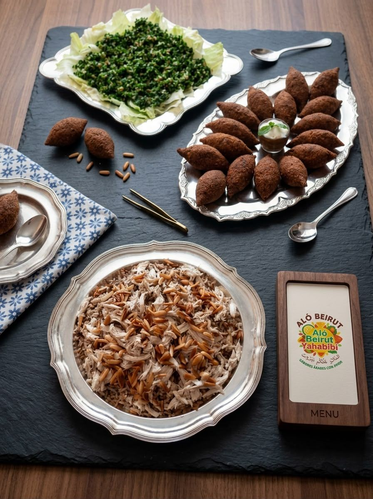

Quipes
El clásico que todo el mundo busca. Trigo, carne y especias, fritos al punto y servidos tibios.
Quipes, deditos, empanadas, arroz con almendras y mezze hechos a mano por tres personas que cocinan como se cocina en casa: receta palestina y libanesa, sazón del Caribe colombiano. Te montamos el matrimonio, el quinceañero o la reunión de la empresa en Bogotá, y viajamos a las principales ciudades del país.
Te respondemos el mismo día · WhatsApp 323 505 6278
Nada sale de un congelador. Las masas se amasan, los quipes se forman uno por uno y las hojas de parra se enrollan a mano la mañana de tu evento.
El clásico que todo el mundo busca. Trigo, carne y especias, fritos al punto y servidos tibios.

Crocantes por fuera, hilo de queso por dentro. Los primeros que se acaban, siempre.

Sambusek de carne o queso, con la masa delgada que las hace livianas.

Con almendras y pasas tostadas, pan pita al lado. El plato fuerte de la mesa.

Lentejas con arroz y cebolla caramelizada. Vegetariano, y el favorito de quien lo prueba.

Perejil, tomate, limón y aceite de oliva. Lo que refresca entre un frito y otro.
Hemos montado mesas en hoteles, salones de matrimonio, oficinas y patios de casa. Tu evento se cotiza por persona, sin paquetes amarrados.
Mesa de mezze para el cóctel y plato fuerte para la recepción.
Picadas que rinden y se comen de pie, sin cubiertos.
Porciones pequeñas, dulces árabes y café al final.
Tabla para compartir en el centro y algo caliente a mitad de noche.
Factura en orden, montaje puntual y personal uniformado.
Desde diez personas. Llegamos, montamos y dejamos la cocina limpia.
Marca lo que aplique y el mensaje se arma solo. Lo abres en WhatsApp, lo envías y Zamira te responde con el precio.
Tu mensaje aparecerá aquí.
Enviar por WhatsApp«En diciembre en mi casa había comida costeña y comida árabe en la misma mesa. Nunca me pareció raro: eso era mi casa.»
Aló Beirut Yahabibi nació en pandemia, cuando Zamira Eslait empezó a vender desde su cocina lo que su familia palestina había comido toda la vida. Hoy son tres personas y las recetas siguen siendo las mismas, sin atajos.
Leer la historia completa
La cocina está en Bogotá y de ahí sale todo. Si tu evento es en otra ciudad, coordinamos con tiempo el viaje y el montaje.